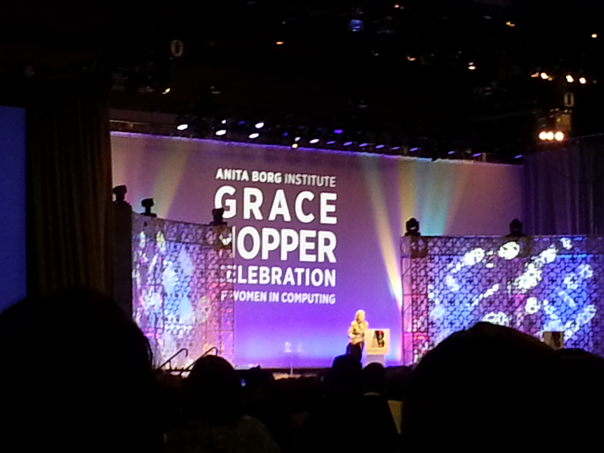
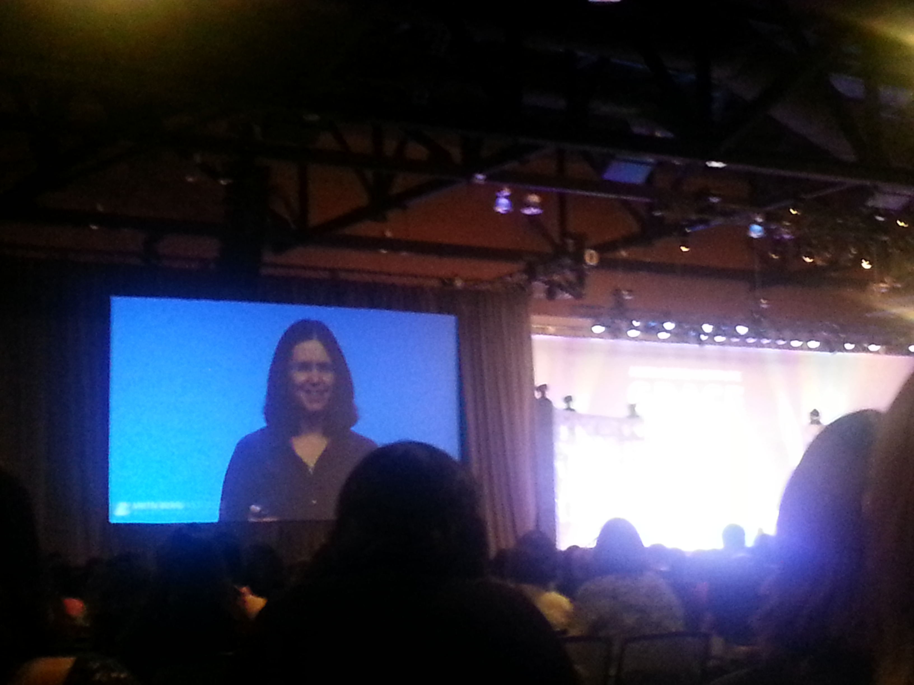
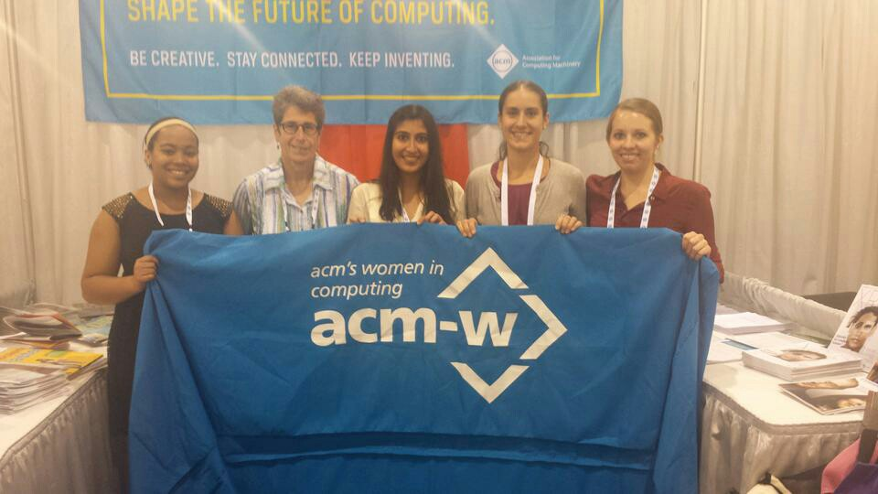

Phoenix, Arizona
October 8-10, 2014
This past October, five executive members of the ACM-W organization along with their faculty advisor Prof. Karen Davis, at the University of Cincinnati travelled to Phoenix, Arizona to attend the annual Grace Hopper Celebration of Women in Computing (GHC).
The members had an opportunity to attend the various keynote sessions, interact with peers from different schools, seek career advice, attend presentations by some leading researchers and industry practitionors in the field of computer science.
There were three keynote sessions - Shafi Goldwasser, Satya Nadella , Aarti Prabhakar
One of our executive members, Dippy Aggarwal, also volunteered to blog for three different sessions related to building a professional profile. The three sessions were as follows:
Here are few pictures
 